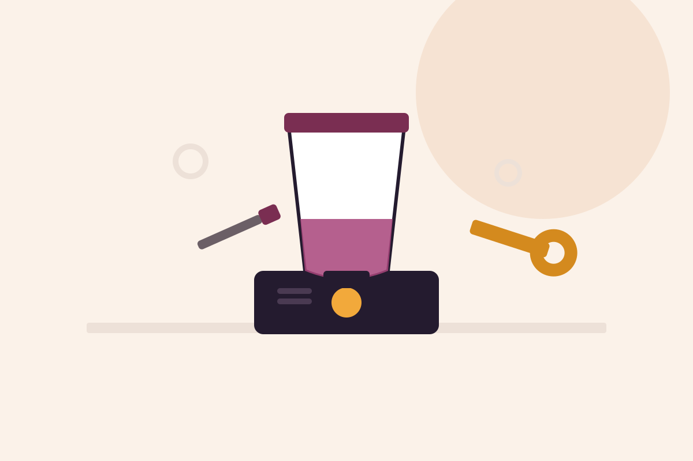
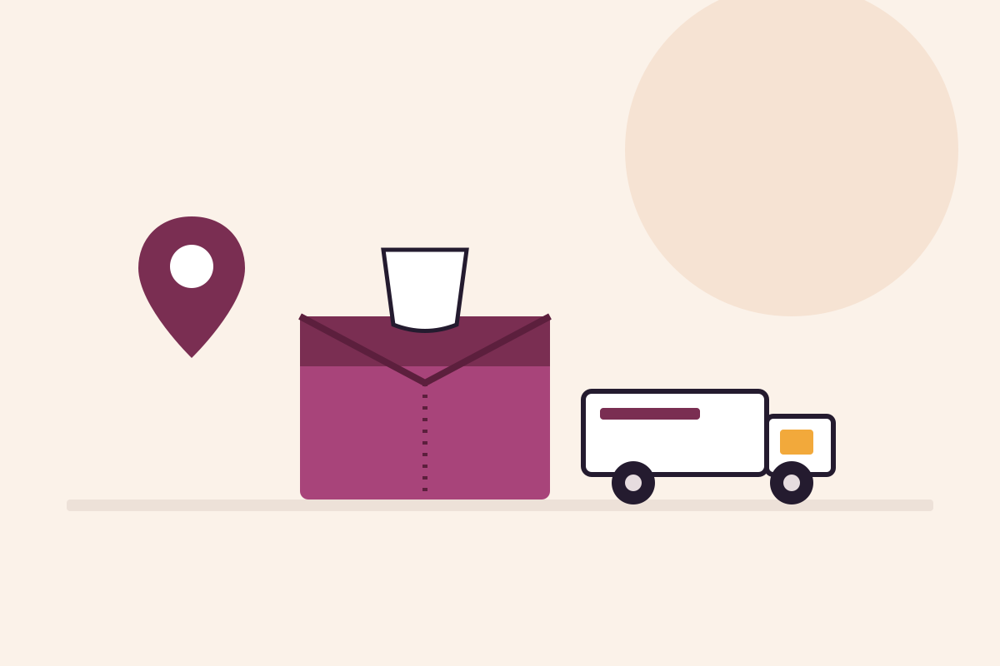

Especialización exclusiva en Vitamix
Trabajamos únicamente con batidoras de la marca Vitamix, lo que nos permite conocer bien sus averías más habituales y sus componentes.
Diagnosticamos y reparamos batidoras Vitamix con problemas de encendido, motor, jarra, cuchillas o panel de control. Legacy, Explorian, Ascent, Ascent X, Professional Series y Venturist. Presupuesto claro antes de intervenir y garantía sobre cada reparación.
Servicio técnico independiente. No somos servicio técnico oficial Vitamix y no gestionamos equipos cubiertos por la garantía del fabricante.
Trabajamos únicamente con batidoras de la marca Vitamix, lo que nos permite conocer bien sus averías más habituales y sus componentes.
El diagnóstico técnico tiene un coste de 20 € + IVA, comunicado antes de cualquier intervención sobre el equipo.
Las intervenciones realizadas cuentan con garantía según las condiciones del servicio.
Solicita la recogida de tu batidora Vitamix sin necesidad de desplazarte.

Diagnosticamos y reparamos batidoras Vitamix con averías electrónicas, mecánicas o del propio motor: modelos Legacy, Explorian, Ascent, Ascent X, Professional Series, Venturist y batidoras de mano. Revisamos el equipo, identificamos el origen del problema y te informamos del presupuesto antes de intervenir.
Estas son algunas de las incidencias que revisamos con más frecuencia en batidoras Vitamix.
La batidora no enciende, se detiene sola o presenta fallos en el cable o el enchufe.
Pérdida de potencia, motor ruidoso o que se detiene durante el uso.
Fugas por la base de la jarra, cuchillas desafiladas o acoplamiento dañado.
Botones o pantalla táctil que no responden, programas que no se ejecutan correctamente.
El motor se calienta en exceso o la batidora se detiene automáticamente por protección térmica.
Vibración excesiva, ruido anómalo o desequilibrio durante el funcionamiento.
Antes de reparar tu batidora Vitamix realizamos un diagnóstico técnico con un coste de 20 € + IVA para localizar con precisión la avería.
Con el diagnóstico realizado te ofrecemos un presupuesto ajustado a la avería real de tu batidora Vitamix. Tú decides si sigues adelante con la reparación, siempre con el presupuesto comunicado de antemano.
Cuéntanos el modelo de tu batidora Vitamix y la avería que presenta.
Trae el equipo a nuestras instalaciones o solicita la recogida desde Península.
Revisamos el equipo por 20 € + IVA y localizamos el origen exacto de la avería.
Te informamos del coste antes de realizar cualquier intervención.
Reparamos el equipo, comprobamos su funcionamiento y te lo entregamos.
Si no puedes acercarte a nuestras instalaciones, solicita la recogida de tu batidora Vitamix y la recogemos en cualquier punto de la Península para su diagnóstico y reparación.
Solicita tu recogida ahora
Consulta las valoraciones publicadas por clientes sobre nuestro servicio y atención.
Cuéntanos qué modelo de batidora Vitamix tienes y qué avería presenta.
C. de Joaquín María López, 26, 28015 Madrid. Metro Islas Filipinas, Canal y Moncloa. Aparcamiento público en Calle Blasco de Garay 61.
El formulario se envía directamente mediante la Gmail API configurada en Vercel. No abre ningún gestor de correo y no utiliza servicios externos de terceros.
Diagnóstico: 20 € + IVA. Te informamos del presupuesto de reparación antes de intervenir.
VitamixTech está especializado exclusivamente en el servicio técnico y la reparación de batidoras Vitamix: modelos Legacy, Explorian, Ascent, Ascent X, Professional Series, Venturist y batidoras de mano.
El diagnóstico técnico tiene un coste de 20 € + IVA. Una vez localizada la avería te informamos del presupuesto de reparación antes de intervenir.
Sí. Puedes utilizar el botón de solicitud de recogida para gestionar el envío desde cualquier punto de Península.
De lunes a viernes de 09:30 a 18:00. Sábados y domingos permanece cerrada la atención presencial. La atención telefónica y por WhatsApp está disponible 24 horas, 365 días.
No. Somos un servicio técnico independiente y no gestionamos reparaciones cubiertas por la garantía oficial del fabricante.
Sí, las reparaciones realizadas cuentan con garantía sobre la intervención según las condiciones del servicio.
Una batidora Vitamix que no enciende, pierde potencia o presenta fugas por la jarra suele tener un origen concreto: un fallo del motor, un acoplamiento desgastado o una junta deteriorada. Por eso, antes de sustituir piezas, en VitamixTech realizamos un diagnóstico técnico (20 € + IVA) que permite identificar la causa real de la avería y evitar reparaciones innecesarias.
Otras averías habituales están relacionadas con el motor ruidoso o sobrecalentado, la jarra o las cuchillas desgastadas, y el panel de control o pantalla táctil que deja de responder correctamente. También calibramos los programas automáticos y sustituimos piezas originales para alargar la vida útil del equipo.
Un mantenimiento periódico —limpieza profunda, revisión de juntas y comprobación del motor— ayuda a prevenir buena parte de las averías más comunes en batidoras Vitamix. Si tu equipo presenta cualquiera de estos síntomas, puedes contactar con nuestro servicio técnico en Madrid o solicitar la recogida desde cualquier punto de la Península.